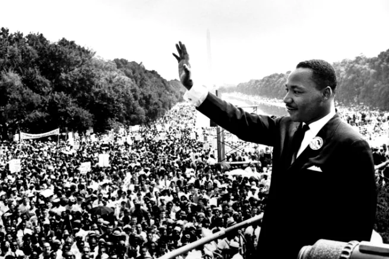

Biografia de Martin Luther King Jr!
Martin Luther King Jr. (1929-1968) foi um ativista norte-americano, lutou contra a discriminação racial e tornou-se um dos mais importantes líderes dos movimentos pelos direitos civis dos negros nos Estados Unidos. Recebeu o Prêmio Nobel da Paz em 1964.
Martin Luther King nasceu em Atlanta, Geórgia, Estados Unidos, no dia 15 de janeiro de 1929. Filho e neto de pastores da Igreja Batista, resolveu seguir pelo mesmo caminho.
Em 1951 formou-se em Teologia na Universidade de Boston. Convertido em pastor, em 1954, Martin Luther King assumiu a função de pastor em uma igreja na cidade de Montgomery, no Alabama.
